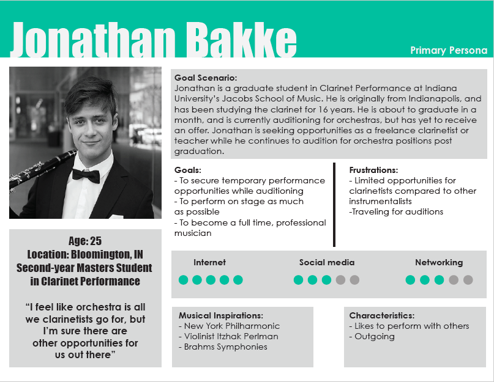
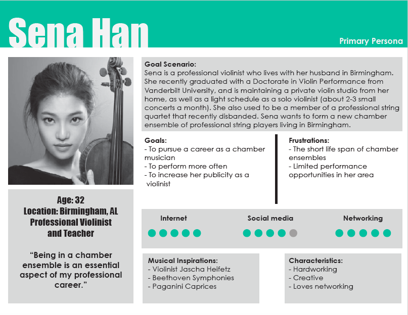

For my project in SI 582: Introduction to Interaction Design, I am working on designing an interactive tool that makes opportunities in classical music more available and accessible to emerging classical artists. Having trained in classical music myself, this is an issue that I constantly see and have always been interested in, so I jumped at this opportunity to carry out a meaningful passion project.
Currently, there is a lack of a centralized platform where musicians can find opportunities, collaborate with each other, and promote themselves. To address this problem, I am planning to design a web-based social networking application aimed toward classical musicians and musician-seekers, looking for and recruiting for a wide range of local opportunities in classical music.
I analyzed several other networking platforms that were aimed toward musicians. Each had their unique advantages and disadvantages, but throughout the process, I discovered that my tool did not have a direct competitor, as there are currently no interactive tools aimed strictly toward classical musicians.
Before I decided on the web-based app as my tool, I brainstormed eight potential solutions that could address my problem. The sketches below show the ideas that I came up with.
I highly enjoyed coming up with these, and I may integrate a couple of these features in my final chosen design!
I formed five different personas based on interviews I conducted with current and former classical musicians. My anti-persona was a renowned musician who already has a busy concert career. Here are two of my primary personas:
 My next task is storymapping. In class, I worked on developing a story map based on an elaborated user scenario I wrote earlier.
I am currently working on creating an accurate and detailed story map for each of my personas. Please stayed tuned for my next steps of this project!